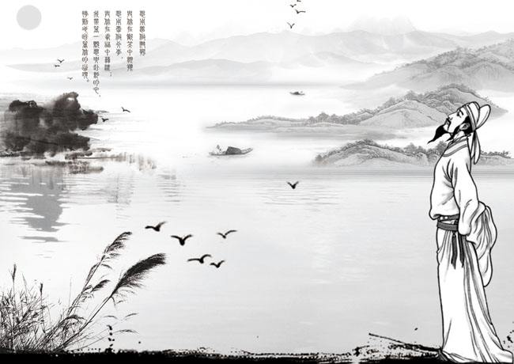

唐诗宋词是中国文学史上的两颗璀璨明珠，并称 “一代有一代之文学”。
唐代是诗的黄金时代，强大国力与丰厚文化积累为其繁荣奠基。唐诗形式丰富，有五言、七言、绝句、律诗等，题材涵盖山水田园、边塞战争等，风格兼具豪放与写实。发展历经初唐、盛唐、中唐、晚唐，初唐四杰等开启风气，盛唐李白、杜甫达顶峰，中唐有新乐府运动，晚唐李商隐、杜牧等亦有佳作。
宋词源于民间，始于唐，兴于五代，盛于两宋。宋代城市发展，市民阶层兴起，加上皇帝与大臣皆爱词，全社会的认同使其佳篇迭出。宋词以长短句为特点，注重音乐节奏，善用比兴，长于抒情，风格以婉约为主，也有豪放等其他风格。代表词人有柳永、苏轼、李清照等。
唐诗宋词意境优美，音韵和谐，善用修辞，情景交融中展现诗人词人内心世界，传达哲理思考。二者承载着丰富历史文化内涵，是中华民族传统文化重要组成部分，对后世文学创作和语言艺术影响深远。

© 版权所有 自定义小组3